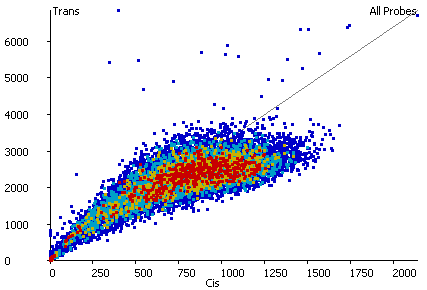

The Cis/Trans ratio of HiC reads in a region can be an indication of the type of contacts it is making. It can also be useful in identifying potential regions of genome rearrangement where true cis contacts in a rearranged genome appear as trans hits when mapped to the common reference.

There is a quantitation method to assign the percentage of cis reads to probe values, but this discards the information about the level of observation. The cis-trans scatterplot allows you to see the number of cis and trans reads for each probe and to therefore make an assesment of which, if any, show abherent patters of contacts.